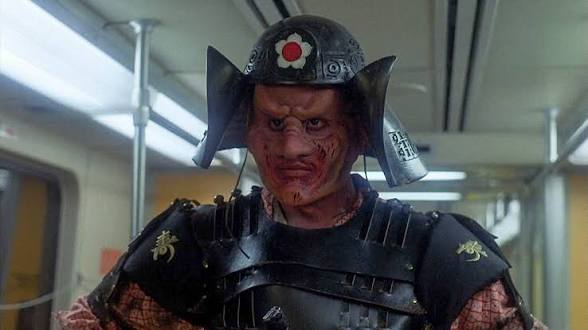

NEON MANIACS (1986) — CERTIFIED MGC G-4

🏛 MGC LOWER COURT OF APPEALS
- ASSET TITLE: Neon Maniacs (1986)
- OFFICIAL REGISTRY GRADE: Certified MGC G-4 (Good / Heavily Circulated Alloy)
- LOWER COURT JURISDICTION: Judge Tina, Chief of Cult Classics
- CASE FILE: #018
📜 THE FORENSIC NARRATIVE BREAKDOWN & RECOVERY
Tina steps up to the steel bench under the neon light to examine this cult relic.
1. Total Logic Collapse & Planchet Corrosion
- Under our strict 5x numismatic lens, Neon Maniacs suffers from severe, uncalibrated structural rule failures that completely dissolve any narrative stakes. The film introduces an army of ancient, blood voiced mutants occupying the Golden Gate Bridge, yet establishes their ultimate physical vulnerability as standard tap water. The narrative layout drops into complete camp hysteria during the high school dance climax, where a teenage girl single-handedly liquidates a horde of terrifying monsters using a standard green plastic squirt gun. This introduces an immediate, massive blemish to the film’s structural integrity.
2. Fractured Character Alloys
- The technical execution represents a heavily circulated specimen with highly erratic character mechanics. The individual monster profiles shift tones wildly from scene to scene, completely splitting the visual layout canvas. The worst offender is “The Juicer”—a slasher mutant dressed as a professional chef who has an actual mechanical juicing machine bolted directly onto his chest. This cartoonish, goofy dynamic contrasts far too harshly against the darker, high-luster presentation of the other maniacs (like the Samurai or the Archer), causing severe friction in the film’s overall pacing cadence.
3. The Straight-Forward MGC Verdict
- Let the permanent base registry reflect the unvarnished reality: Neon Maniacs is a textbook example of a heavily worn, low-budget exploitation alloy. However, it completely avoids slipping down to the P-1 basal floor thanks to its sheer, unhinged entertainment velocity. The monster designs are incredibly creative, the practical effects are delightfully trashy, and the campy 1980s synth atmosphere keeps the audience highly entertained. If you are looking for logical cinema, stay far away; but if you want high-luster, midnight-movie schlock, this folder holds its place well in a lower-grade junk box.
⚖️ THE CHIEF’S FINAL DECREE
Tina grabs her heavy 12-inch crescent wrench and brings it down onto the cold steel desk with a deafening, echoing metallic ring.
- 🔧💥Case Closed. Certified MGC G-4

• © 2026 MOVIE GRADING CONSENSUS. All Sovereign Rights Reserved.